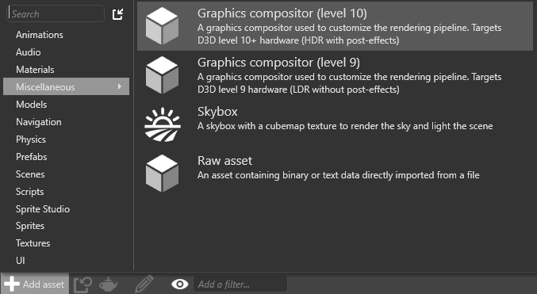

Graphics compositor
Warning
Приносим свои извинения за неудобства. Для этой страницы нет перевода на русский язык. Она будет отображаться на английском языке.
Advanced Programmer
Note
This page requires a basic understanding of graphics pipelines.
The graphics compositor organizes how scenes are rendered. You can use it to customize almost every part of the rendering pipeline. For example, you can:
- use one or multiple cameras
- filter entities
- render to one or more render textures, with different viewports
- set HDR or LDR rendering
- apply post effects to a render target, selected before or after rendering a camera
- clear a render target or clear only the depth buffer (eg to always render on top of a render target in a FPS game, or render the UI)
- modify the compositor from scripts (or any animation system), for example to modify post effects
Create a graphics compositor
Stride includes a graphics compositor when you create a project.
If you need to create another graphics compositor, in the Asset View, click Add asset and select Misc > Graphics compositor.

You can choose one of two presets:
- Level 10 (HDR with post effects)
- Level 9 (LDR with no post effects)
Set the graphics compositor
You can have multiple graphics compositors in your project, but you can only use one compositor at a time. At runtime, Stride uses the graphics compositor you specify in Game Settings.

You can also change the graphics compositor at runtime in a script.
Open the graphics compositor editor
You customize the graphics compositor in the graphics compositor editor.
Note
The graphics compositor editor is an experimental feature.
In the Asset View (in the bottom pane by default), double-click the Graphics Compositor asset.

The graphics compositor editor opens.

Nodes
The graphics compositor editor is divided into nodes. You can set the properties of each node in the Property Grid on the right.
Entry points
In the Entry Points node, you configure the pipeline for each entry point.

There are three entry points:
- Game, to render your game
- Editor, to render the Game Studio editor
- Single view (referred to as Utility in the Property Grid), to render other things, such as light probes and cubemaps
Each entry point can use a separate rendering pipeline. For example, the game and editor might share the same forward renderer and post-processing effects while your single view uses a separate forward renderer.
Connect an entry point to a renderer
Select the Entry point node.
In the Property Grid, next to the entry point you want to connect (Editor, Game or Utility), select the renderer you want to connect to.

For information about the different renderers, see Scene renderers.
Forward renderer
In a typical setup, the forward renderer renders almost everything in your scene. It renders, in order:
- opaque objects
- transparent objects
- post effects
The forward renderer is also where you set virtual reality options. You configure the forward renderer properties in the forward entry node.
Debug renderer
The debug renderer is used by scripts to print debug information. For more information, see Debug renderers.
Post-processing effects
The post-processing effects node comes after the forward renderer and controls the post effects in your game. For more information, see post-processing effects.
Create a node
To create a node, right-click the graphics compositor editor and select the type of node you want to create: